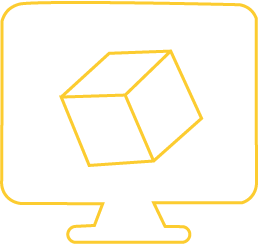
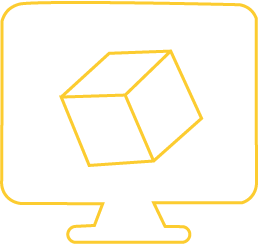

Découvrez notre expertise
Ingénieurs experts en conception bio-inspirées
OAK Innovation est un bureau d'étude dont la mission d’accélérer la transition écologique de l'industrie en concevant des solutions bio-inspirées qui allient performance et durabilité.
Notre métier
Nous observons les mécanismes naturels, faisons l'abstraction des principes clés, et appliquons notre savoir-faire pour concevoir des solutions techniques qui allient performance et durabilité.
Notre approche repose sur trois piliers fondamentaux :
Observer
Observer signifie étudier la nature pour en comprendre les mécanismes, les stratégies et les solutions qu’elle a développées.Observer et comprendre : les secrets de la nature pour innover.
Observer c'est :


Analyser les systèmes biologiques :
Observer comment les organismes vivants interagissent avec leur environnement et comment ils font face à des problématiques tels que la régulation de la température, la résistance aux intempéries, protections contre les parasites, etc.
Étudier les comportements et structures naturelles :
Observer en détail les mécanismes et structures spécifiques d’un organisme ou d’un système pour comprendre leur fonctionnement.
Abstraction
Extraire les principes fondamentaux des systèmes naturels. Cette étape est cruciale pour identifier les mécanismes biologiques qui peuvent être transposés à des solutions techniques innovantes.
L'abstraction c'est :
Identifier les principes de fonctionnement :
L'abstraction commence par l'identification des principes fondamentaux qui sous-tendent les phénomènes observés dans la nature. Plutôt que de se contenter de décrire la forme ou la structure, l'objectif est de repérer les mécanismes essentiels qui rendent ces éléments efficaces, que ce soit dans le fonctionnement, l’adaptation ou la performance.
Extraire les mécanismes clés :
Observer en détail les mécanismes et structures spécifiques d’un organisme ou d’un système pour comprendre leur fonctionnement.
Conceptualiser :
Une fois les principes extraits, l’abstraction consiste à les simplifier, à les adapter, et à les transposer dans un contexte industriel ou technologique.


 

Know-how :
Notre savoir-faire repose sur la maîtrise des outils techniques et des méthodes scientifiques nécessaires pour traduire des principes naturels en solutions concrètes. Il s’agit un savoir-faire multidisciplinaire qui intègre des compétences en modélisation 3D, simulation numérique, prototypage, et validation.
Modélisation 3D et simulation :
En partant de l’observation de la nature et de l’abstraction des mécanismes sous-jacents, nos ingénieurs créent des modèles 3D inspirés du vivant.
Validation :
Les modèles 3D réalisés sont validés par des simulations numériques pour tester leur performance dans des conditions réelles, garantissant ainsi leur efficacité avant toute application industrielle.
Prototypage physique :
OAK Innovation accompagne le prototypage physique, qu’il soit réalisé par le client ou par les partenaires de OAK Innovation.
Notre Offre
Grâce à cette offre en 4 phases, OAK Innovation vous accompagne tout au long du cycle de maturation de votre innovation, depuis les premières idées jusqu’à leur mise en œuvre concrète. Nous mettons notre savoir-faire au service de vos ambitions.
Prêt à booster votre R&D ?
Nous contacter